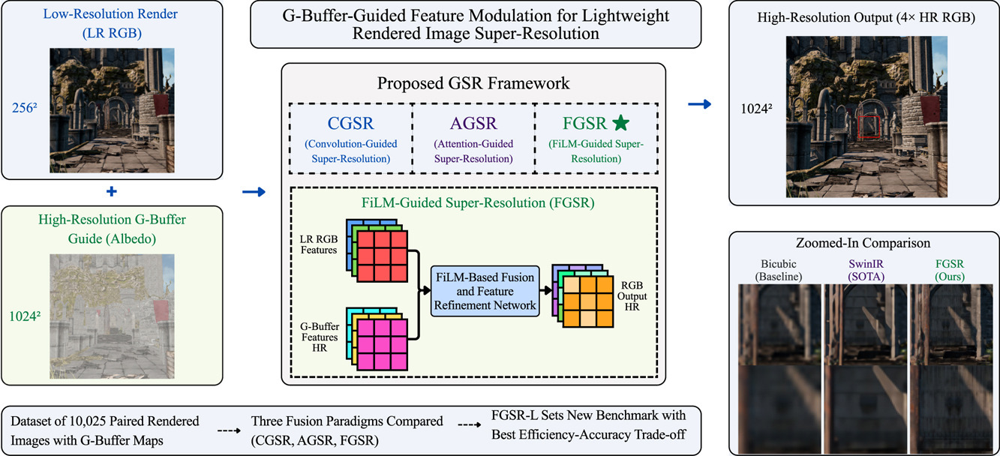
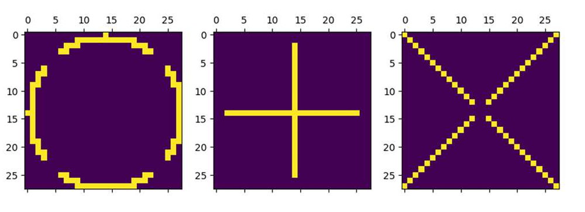
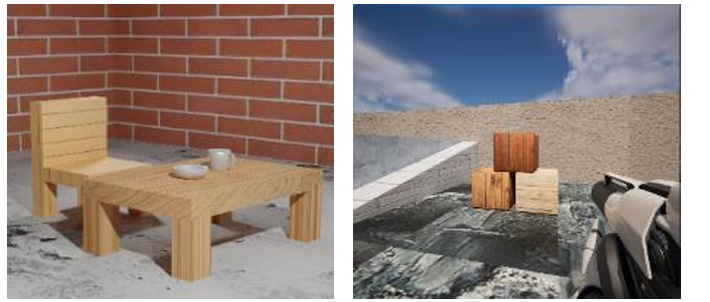
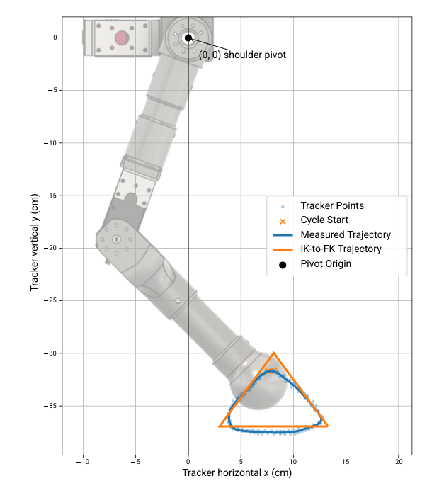
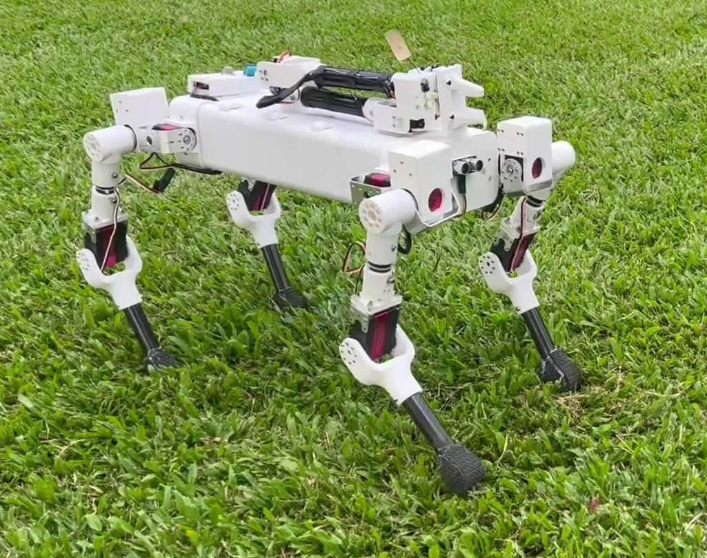

Array · Volume 32 · 2026 · Article 101324
G-buffer-guided feature modulation for lightweight rendered image super-resolution
M. S. Hossain, M. T. Hassan and A. Islam
SCHOLARLY WORK

Array · Volume 32 · 2026 · Article 101324
M. S. Hossain, M. T. Hassan and A. Islam

ICICT 2024 · Dhaka · pp. 130–134
M. S. Hossain, M. T. Hassan and M. S. Hossain

ICICT4SD 2023 · Dhaka · pp. 341–345
M. S. Hossain, M. S. Hossain and M. B. Karim

IEEE RAAICON · Accepted, 2026
M. S. Hossain, R. Abrar, S. A. Akib, T. Ahmed, S. Alam and A. M. Oni

B.Sc. Thesis · BRAC University · 2026
M. S. Hossain, R. M. Abrar, S. A. Akib and T. Ahmed